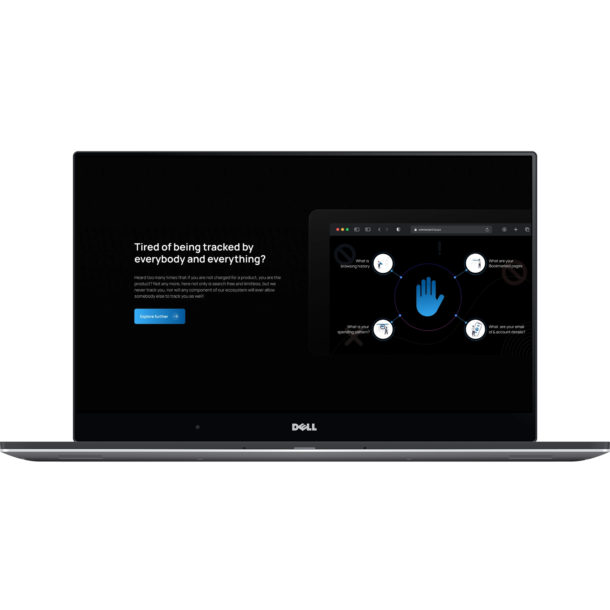
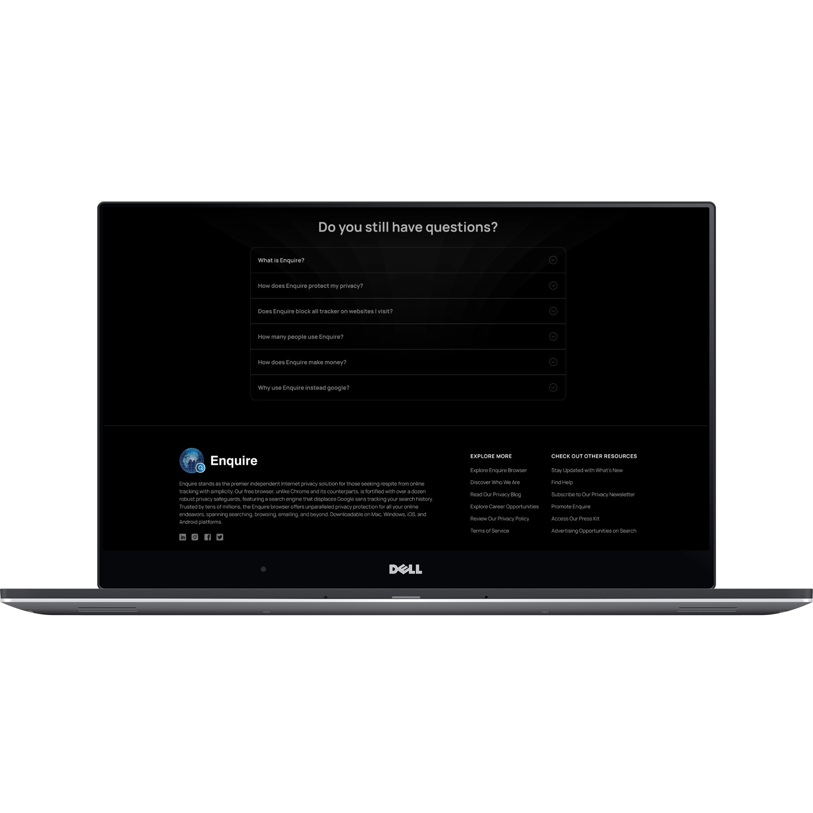

Owned UX/UI design across the product experience, from structure and interaction patterns through high-fidelity delivery.
AI SEARCH · CONVERSATIONAL AI · KNOWLEDGE DISCOVERY
Enquire
Designing an AI search experience around how people ask, understand, verify and continue—not just how they type a query.
0→1 AI product design engagement · 2024
AI-powered search, conversational knowledge discovery, source visibility, voice and multilingual input.
Worked with product, engineering and enterprise stakeholders to shape a coherent 0→1 experience.
IA, user flows, AI interaction, responsive UX, design system thinking, handoff and design QA.
The case study uses authentic Enquire product screens. No fabricated user counts, quotes or business metrics are presented.
01
The product question
Search was built around keywords and destinations. Enquire needed to support people who ask complete questions, expect synthesized answers, want evidence and continue investigating without restarting.
Search finds information.
Enquire needed to help people understand it.
The design challenge was not simply to place AI above a results page. It was to make a new product model understandable: ask naturally, receive a useful response, inspect its evidence and continue from the same context.
How might we make knowledge discovery feel as natural as a conversation—while keeping the answer understandable, verifiable and controllable?
Natural language instead of keyword syntax.
Make the synthesized answer primary.
Keep evidence and provenance visible.
Preserve context for the next question.
02
What made the problem hard
Enquire combined search, conversational AI, document intelligence, source visibility, voice and multilingual interaction. The product challenge was making those capabilities feel like one coherent experience.
Intent
Understand questions that are richer than keywords.
Answer
Make useful synthesis the primary result.
Evidence
Let people inspect where information comes from.
Continuity
Carry context into follow-up questions.
Modes
Support voice and language without fragmenting the mental model.
03
Discovery: evidence into decisions
The design work started by understanding the product problem from multiple angles: stakeholder needs, knowledge-discovery behavior, AI interaction patterns and implementation constraints.
What does the product need to make possible?
Clarify the value proposition, priority capabilities and the experience expected from a new AI product.
What must remain understandable?
Keep the relationship between question, answer, evidence and next step legible.
Where can AI become ambiguous?
Design around intent, response, uncertainty, evidence, feedback and continuation—not only the chat surface.
NeedDesign implicationMake the synthesized answer the primary information layer.
TrustDesign implicationKeep source context close to the information it supports.
ContinuityDesign implicationPreserve conversation context instead of restarting the task.
ImplementationDesign implicationUse reusable states and predictable patterns that engineering can carry into production.
This case study intentionally distinguishes design reasoning from verified research statistics: no participant counts, quotes or quantitative findings are invented.
04
People, jobs & intent
Rather than relying on demographic personas, the experience was structured around the tasks people need an AI knowledge product to support.
Find
Locate useful information quickly without learning a complex query language.
Understand
Turn multiple pieces of information into an answer that can be read and acted on.
Investigate
Ask a follow-up, inspect evidence and continue the same line of inquiry.
Design around the job, not the interface. The user should not have to understand how the AI system works in order to understand how to use the product.
Design principle05
Product principles
Five principles became the bridge between the product problem and the interface decisions.
ASK
Let people communicate naturally.
UNDERSTAND
Interpret intent before forcing navigation.
ANSWER
Put useful synthesis first.
VERIFY
Keep evidence visible.
CONTINUE
Preserve the investigation.
06
Key design decisions
This is where the product thinking becomes visible: each major interaction was shaped around a specific problem, a design choice and a consequence for the interface.
Answer first
Problem: A traditional results page makes users scan and assemble the answer themselves.
Trade-off: Reduce the prominence of raw result density to increase comprehension of the synthesized response.UI consequence: The answer becomes the primary information layer, with navigation supporting it.
Evidence stays close
Problem: AI output becomes difficult to verify when sources are separated from the claim.
Trade-off: Preserve reading flow without hiding provenance.UI consequence: Source context remains part of the response experience.
Follow-up remains contextual
Problem: Restarting a query destroys the value of conversational exploration.
Trade-off: Keep context visible without turning the experience into a conventional chat transcript.UI consequence: The next question builds on the previous turn.
Voice is another input
Problem: A separate voice experience creates a second mental model.
Trade-off: Add natural input without creating another product path.UI consequence: Voice enters the same information architecture as text.
Language changes input, not IA
Problem: Multilingual experiences can become fragmented when language is treated as a separate path.
Trade-off: Adapt communication while keeping the task model stable.UI consequence: The same product logic survives across languages.
07
Information architecture
Multiple AI capabilities become one predictable knowledge-discovery journey.
ENTRY
Search · prompt · voice
INTENT
Understand the question
ANSWER
Synthesize useful output
EVIDENCE
Sources · citations
CONTINUE
Follow-up · history
One mental model.
Multiple ways to enter.
Separate answer from evidence. Users should not need to decode the response to understand its provenance.
Preserve context. A follow-up is a continuation of the investigation, not a new session.
Keep modes additive. Voice and multilingual input expand communication without changing the underlying task model.
08
User flows
The flow model keeps search, conversation, voice and multilingual input inside one continuous journey.
INPUT
Question · voice · language
INTERPRET
Query → intent
RESPOND
AI answer
VERIFY
Sources · evidence
CONTINUE
Follow-up · history
Question → intent → response → evidence → follow-up.
Natural input → recognition → response → continue.
Input language → response language → same mental model.
Source → retrieval → response → evidence.
09
Wireframes: hierarchy before visual language
Low-fidelity work isolated the interaction decisions before branding, color and visual polish could influence the judgment.
Ask naturally
Make the answer primary
Keep context alive
Strip the interface down until the hierarchy is undeniable: answer before navigation, evidence near claims, follow-up in context.
Wireframe principle10
High-fidelity product
High fidelity translated the interaction model into Enquire's visual language. These screens are authentic product work, not concept UI.
11
Screen anatomy: why the interface works
The design should make the relationship between product logic and UI visible—not just display a polished screen.
12
Natural communication: voice + multilingual
Voice and language were treated as alternate ways to communicate intent—not as separate products.
Input adapts to the person.
The mental model stays stable.
The language selector, voice affordance and search field are alternate entry points into the same product model.
This reduces cognitive switching: the user changes how they communicate, not what they have to learn about the product.
13
Trust, privacy & product meaning
AI search is not only a speed problem. The interface also has to communicate what the product values and what the user can understand or control.

Trust is not a footer.
It is an interaction requirement.
The product communicates a privacy position alongside the search experience. That makes trust part of the overall product meaning rather than supporting copy added after the interface.
Transparency, predictable states and evidence reinforce the same goal: make AI useful without making it opaque.
14
AI interaction design
Enquire required more than a chat interface. The system had to manage intent, response, evidence, continuity and recovery.
INPUT
Question · voice · language
INTENT
Interpret meaning
RESPONSE
Answer first
EVIDENCE
Make intelligence inspectable
FOLLOW-UP
Continue with context
Design uncertainty
Loading, waiting, incomplete or unsuccessful states need to communicate what the system is doing rather than leaving people guessing.
Design recovery
When the expected answer is unavailable, the experience should guide the next useful action rather than simply fail.
Design feedback
Feedback becomes part of the AI interaction loop, giving people a clear way to communicate whether the response was useful.
15
Conversation as a product surface
The conversational layer extends search into a continuous investigation rather than a sequence of disconnected prompts.
Good conversational UX is not a chat box. It is a system for managing intent, context, response, evidence, uncertainty and the next action.
Human–AI interaction principle16
System thinking & delivery
The experience had to survive implementation—not just look coherent inside a design file.
Foundations
Typography, spacing, color, hierarchy and responsive rules.
Components
Reusable inputs, buttons, search states, navigation and content patterns.
AI states
Loading, waiting, response, feedback, uncertainty and continuation.
Handoff
Implementation-ready specifications, responsive behavior and design QA.
Hierarchy, contrast, focus/state thinking and input flexibility considered as part of the interaction model.
The same information architecture remains understandable across viewport sizes and input contexts.
Reusable patterns and implementation-oriented specifications support collaboration with engineering.
The intended experience is something to preserve through implementation, not simply hand off.
Figma → components & states → responsive implementation → engineering review → design QA. The handoff is successful when the intended experience survives implementation.
Design-to-delivery model17
Validation & iteration
Validation was centered on the moments where AI can be misunderstood: comprehension, evidence, continuity and mode switching. The record available for this portfolio does not include participant counts or quantitative results, so no such numbers are claimed here.
Can the person understand the response?
Check whether hierarchy and response structure make the useful information immediately legible.
Iteration lens: simplify hierarchy before adding more interface.
Can the person verify the answer?
Check whether source visibility and provenance are understandable without breaking reading flow.
Iteration lens: keep evidence close to the claim it supports.
Can the person continue without restarting?
Check whether the next question clearly belongs to the previous investigation.
Iteration lens: preserve context instead of creating another mode.
Can the person change input naturally?
Check whether text, voice and language choices feel like variations of one product.
Iteration lens: change input, not the mental model.
I would rather validate the highest-risk misunderstanding than polish a low-risk screen. The process is driven by product risk, not by the number of artifacts produced.
Validation principle18
Contribution & outcome
The work turned a collection of AI capabilities into a coherent product experience that could be understood, explored and extended.
What I brought to the product.
Search → results → open sources → repeat query
A conventional search mental model optimized around retrieval and navigation.
Ask → understand → answer → verify → continue
A knowledge-discovery model designed around questions, evidence and contextual exploration.

DESIGN REFLECTION
I don't design screens in isolation.
I design the system of decisions behind them.
For Enquire, that meant turning a complex AI capability set into an experience people could ask, understand, verify and continue using. The visible interface was the result; the deeper design work was the product logic connecting intent, response, evidence and action.
Translate ambiguity into a clear product model.
Make complex interaction legible through hierarchy and systems.
Carry the intended experience from Figma into implementation.